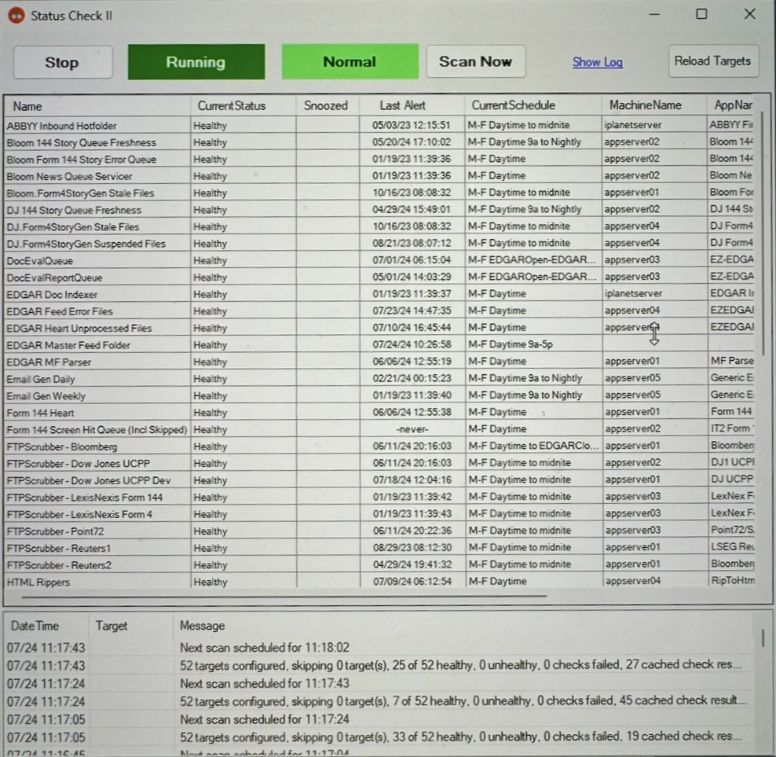

Kathryn McNeely
Contact Kathryn McNeely
1147 DaAndra Dr, Watkinsville, GA 30677 • (706) 521-1912 • kkm69913@uga.edu
I am interested in full-stack software development for financial applications where I can use my technical skills to turn complex data into actionable insights.
Education
University of Georgia 3.3
Bachelor of Science in Computer Science May 2026
Honors and Awards
Zell Miller Scholarship Recipient 2022–Present
Walton EMC Scholarship Recipient 2022
Skills
HTML
CSS
C#
Java
JavaScript
React
SQL
Projects
Software Monitoring Tool

Developed internal monitoring software to track health of other internal software
Implemented automated alerts to notify admin of system issues
Built UI with extensive admin functionality
Institutional Holders Feature
Expanded website to display institutional holders by company
Implemented full-stack feature from database schema to front-end design
Imrpoved data accessibility for financial analysts and clients
Bloomberg Real-Time Insider Trading Analytics Reports
Developed software to create real-time insider trading reports from SEC filings
Reports include advanced analytics and visualizations, such as charts and graphs
Enabled faster insigts for financial analysts and clients